AZSF
© AZSF 2024.
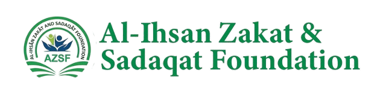
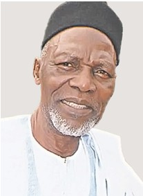
Professor Dawud Olatokunbo Shittu Noibi, OBE, is a revered Is lamic scholar and retired Professor of Islamic Studies at the Uni versity of Ibadan, Nigeria. Former Resident Islamic Consultant to IQRA Trust, London, he co-founded the Muslim Council of Britain and was the founder of the Council of the Nigerian Mus lim Organisations (UK) as well as the Southwark Muslim Forum. He was invited back to Nigeria to be the pioneer Executive Secre tary of the Muslim Ummah of Southwest Nigeria (MUSWEN), a position he held for eleven (11) years. In that leadership position, he promoted Zakaat as a tool for unity and social justice, among other achievements. Honoured with the OBE, DSc (Honoris Cau sa), and fellowships (FISN, FIAC), Professor Noibi is celebrated globally for his wisdom, humility and lifelong service to humanity. Professor D. O. S. Noibi is a Distinguished Islamic Scholar, Educator and Interfaith Leader
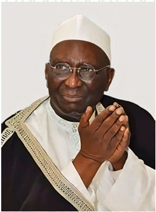
Sheikh Najimudeen Muyideen Al-Kubra II is a highly respected Patron of Al-Ihsan Zakat and Sadaqat Foundation, contributing his dynamic leadership and deep understanding of Islamic principles to the organization’s vision. As a globally recognized Islamic scholar and the Chief Imam of Assalatur Arrahman Islamic Association Worldwide, he uniquely blends his background as a trained accountant with his spiritual role, offering a holistic perspective on faith and community development. Sheikh Najimudeen is celebrated for his thought leadership on so cial justice, exemplified by his vocal advocacy on critical societal issues. His impactful sermons resonate widely, inspiring and educat ing communities globally. With a steadfast commitment to integrity and a clear vision, Sheikh Najimudeen bridges the gap between faith and humanity through his dedicated service, rigorous scholarship, and tireless peacebuilding efforts, making him an invaluable asset to Al-Ihsan Zakat and Sadaqat Foundation.
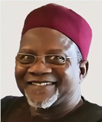
Professor Mashood Baderin is a distinguished academic from the School of Oriental and African Studies (SOAS), University of Lon don, specialising in Islamic Law. With a profound scholarly background, Professor Baderin’s expertise spans Islamic legal theory, human rights within Is lamic frameworks, and contemporary issues in Islamic juris prudence. His extensive research and publications have signifi cantly contributed to these fields, making him a leading voice in understanding the complexities of Sharia in the modern world. Professor Baderin’s academic rigour and deep understanding of Is lamic principles led to his selection as a valued member of the Sharia Compliance Board (SCB) for Al-Ihsan Zakat and Sadaqat Founda tion. In this role, he will be instrumental to ensuring all operations and charitable distributions strictly adhere to Islamic guidelines and principles. His appointment reflects AZSF’s commitment to uphold ing the highest levels of Sharia compliance and integrity, ensuring that its work is both effective and fully aligned with Islamic tenets. His contributions will undoubtedly enhance the trustworthiness and authenticity of the organisation’s efforts.
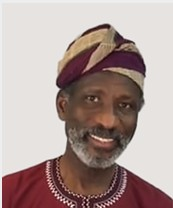
Dr. Imran Hamza Alawiye is a renowned scholar in Arabic lan guage pedagogy, with a passion for education and communi ty upliftment. He earned his BA and MA from the Islamic Uni versity of Madinah and holds a PhD. from SOAS, University of London in the field of Arabic literature. He is recognised as an Arabic language educator, author, and community advocate. His widely acclaimed ‘Gateway to Arabic’ series has launched countless students on their path to learning Arabic, and it forms the Arabic syllabus cornerstone of numerous madrasahs in the UK and abroad. Through supportive teacher training programmes and YouTube tutorials, Dr. Alawiye delivers academic excellence that has a grassroots impact. Dr. Alawiye also has a passion for charitable works. He is the founder of Helping Hands for Education, a charity dedicated to establishing a public library and educational resource centre in his hometown, Ogbomosho, in southwestern Nigeria. He was a 2018 finalist for the Muslim News’ Sankore Award for Excellence in Education, and he continues to champion access, quality, and innovation in Arabic and Islamic education through his teaching materials.
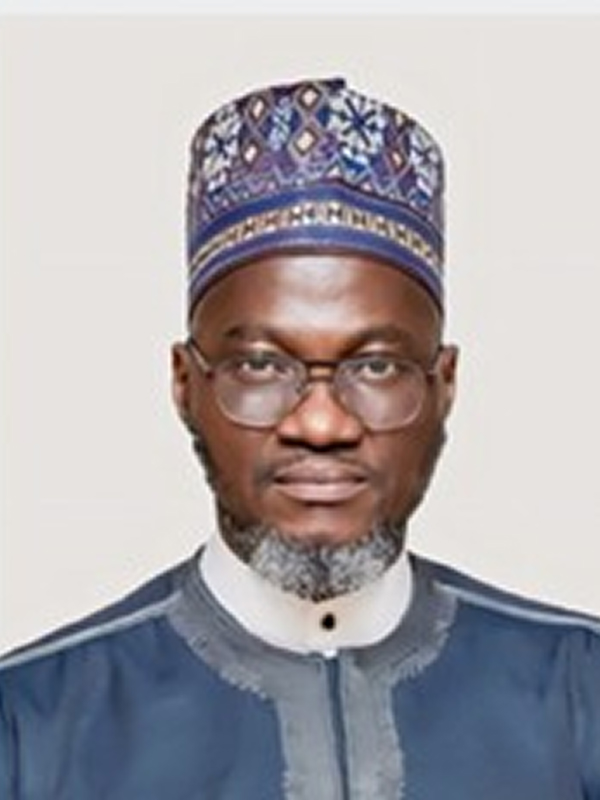
Professor AbdulRazzaq AbdulMajeed Alaro is a preeminent scholar and a vital member of Al-Ihsan Zakat and Sadaqat Foundation’s Shari ah Compliance Board, bringing unparalleled expertise in Islamic Law and Finance. As a Professor and Head of the Department of Islam ic Law at the University of Ilorin’s Faculty of Law, his deep academic foundation provides robust guidance on all Shariah-related matters. Professor Alaro’s practical experience in ensuring Shariah adherence is extensive. He serves as a prominent member of the Central Bank of Nigeria’s Financial Regulation Advisory Council of Experts (FRACE), a crucial body responsi ble for advising on the regulatory framework for Islamic finance in Nigeria. His involvement with FRACE, alongside his advisory roles with other key fi nancial regulatory bodies like the National Insurance Commission’s Takaf ul Advisory Council, demonstrates his profound understanding of applying Islamic legal principles to complex financial instruments and operations. An alumnus of the Islamic University of Madinah, where he graduated with First Class Honours, Professor Alaro is recognized globally for his rigorous scholarship in Islamic financial transactions, banking, insur ance, and capital markets. His insights are instrumental in ensuring that all operations of Al-Ihsan Zakat and Sadaqat Foundation strictly adhere to the highest standards of Islamic law, guaranteeing transparency, ethical conduct, and the proper distribution of zakat and sadaqat. His contribu tion is invaluable in upholding the foundation’s commitment to Shariah
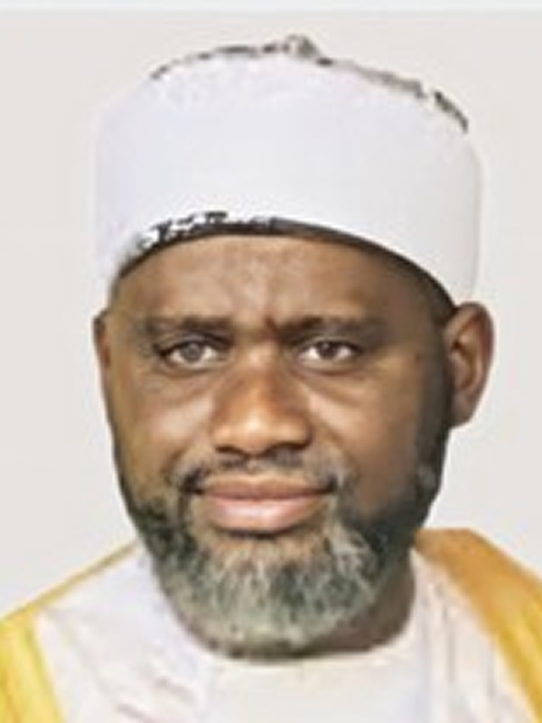
Professor Luqman Zakariyah is an exceptionally distinguished schol ar and a vital member of Al-Ihsan Zakat and Sadaqat Foundation’s Shariah Compliance Board, offering unparalleled insights into Islam ic Jurisprudence and Applied Legal Theory. Beyond his profound aca demic contributions, he also serves as an Imam of the National Mosque Abuja, a testament to his high religious standing and public trust. As a Professor of Islamic Jurisprudence at the University of Abuja, holding a PhD in Islamic Studies with a specialization in Islamic Legal Maxims, his academic background is robust. His extensive career includes leadership roles as Head of Fiqh and Usul al-Fiqh and Head of Research at the Fac ulty of Islamic Revealed Knowledge and Human Sciences, International Islamic University Malaysia (IIUM). Professor Zakariyah’s international scholarly engagements further include a fellowship at the Islamic Legal Study Program at Harvard Law School, USA (2012-2013), and a visiting Professor Zakariyah is widely recognized for his deep knowledge in areas such as Comparative Islamic Jurisprudence (al-Fiqh al-Muqaran), Islamic Legal Maxims (al-Qawaid al-Fiqhiyyah), and Applied Maqasid al-Shari’ah. His public role as an Imam, combined with his rigorous scholarly back ground and focus on the practical application of Islamic legal principles, makes him uniquely qualified to ensure the Shariah authenticity, ethical operations, and broad public acceptance of Al-Ihsan Zakat and Sadaqat Foundation’s initiatives. His contributions are instrumental in upholding the highest standards of Islamic compliance.
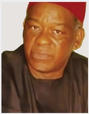
Sheikh Dr.Haroun Ogbonnia Ajah is a distinguished academic, Shari’ah Scholar, public affairs analyst and community leader, whose career spans decades of service in public policy, religious advocacy and social development. As Vice President-General of the Nigerian Supreme Council for Islamic Affairs (NSCIA) and Jama’atul Nasril Islam (JNI), member, Abuja National Mosque Trust Fund, Founder and President, Da’wah and Guidance Bureau of Nigeria (DGBN) and Chairman of the South East Muslim Community Forum (SEM COF), he has emerged as a leading voice for Muslim minorities in Nigeria’s South-East geopolitical zone, pro moting peaceful coexistence, interfaith dialogue, human rights advancement and Islamic values in public life. Sheikh Dr. Ajah holds a doctorate degrees in Criminology and Security Studies, Public Management and Social Welfare and is a Fellow of a the Chartered Risk and Security Analysts (FCRSA) and foun dation member of the International Association of Research Scholars and Administrators (IAR SA). His deep engagement with Islamic governance, Public Services, constitutional rights, and com munity security and development makes him uniquely qualified to contribute to Shariah-based compliance in charitable administration. He is widely respected for his insight, integrity, politi cal consultancy and management and principled stance on justice, trust and religious accountability. His appointment to the Shari’ah Compliance Board of Al-Ihsan Zakat and Sadaqat Foundation is a re flection of his firm grasp of Islamic jurisprudence and global views on economy and Islamic Finance as it relates to social security, public welfare (maslahah), zakat distribution, and community economic em powerment. Sheikh Dr. Ajah is deeply committed to upholding the ethical standards and spiritual obliga tions of Zakat and Sadaqah, ensuring that all disbursements align with both Islamic law and social equity. His role in the Foundation reinforces its mission to operate with transparency, fairness and re ligious compliance—ensuring that funds are not only effectively managed and efficiently dis tributed but are also Shari’ah-compliant in every respect. His presence lends depth and author ity to the Foundation’s efforts in balancing faith, governance, and service to God and humanity. Sheikh Dr. Haroun Ogbonnia Ajah was a National Commissioner, National Hajj Commission of Nigeria (NAHCON) representing the Jama’atu Nasril Islam (JNI) between 2008 to 2014 and has worked with the At tache’s Office of the Royal Saudi Arabia Embassy in Nigeria under the Ministry of Islamic Affairs, Da’wah and Guidance, Kingdom of Saudi Arabia. He is a Living Legend Ambassador and Nze Ndi Muslim of Igboland.
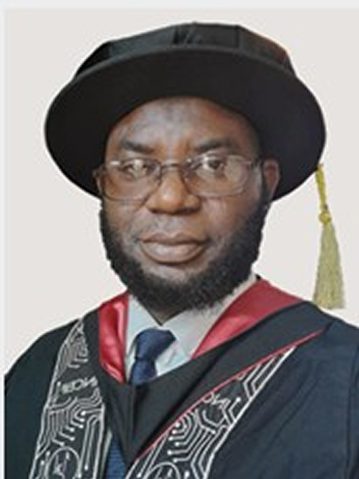
Salami Saheed Adekunle is a distinguished professional in the field of Islamic finance extensive academic knowledge with practical experience as a banker and educator. He earned both academic and professional Masters in islamic Finance from the prestigious INCEIF University in Malaysia. He later bagged PhD. in Islamic Finance from the same institution. He is aslo a multidisciplinary graduate of Biochemistry from University of Ilorin and Shariah from King Faisal University. He is a legal practitioner. in addition, he serves as a Shariah Auditor, Shariah Adviser, and Consul tant specializing in Islamic Social Finance and Fintech to various institu tions in Nigeria and abroad.
Hadji Maroof Adeoye is a highly experienced social entrepreneur and respected community leader, currently serving as the Chair of the Stakeholders Committee at Al-Ihsan Zakat & Sadaqat Foundation. Maroof’s dedication to community service is evident through his extensive leadership roles. He was a founding General Sec retary and immediate Ameer of the Council of Nigeria Muslim Organisations (CNMO-UK), demonstrating his commitment to fostering strong community ties. His influence extends across nu merous Muslim and civil society organisations both in the UK and internationally, including the Muslim Council of Britain as a member of the Inaugural Central Working Committee in 1997. Recognised for his expertise and contributions, Maroof has been a delegate at significant global forums like the World Islamic Econom ic Forum. He brings a wealth of knowledge and a strong professional background to his role, holding multiple academic and professional qualifications (MBA, DChA, FCIE, etc.). Maroof has made substan tial contributions across the faith, education, and corporate sectors, reflecting his diverse skills and unwavering commitment to positive change
Hadjia Mujidah Toyin Mebude serves as a highly valued trustee of Al-Ihsan Zakat, bringing a profound blend of educational excel lence, distinguished community leadership, and a steadfast com mitment to service that deeply enriches the organization’s mission. Her exceptional background and personal dedication significantly con tribute to robust governance and strategic oversight within the charity. Academically, Mujidah is exceptionally well-qualified, holding a degree from the University of Westminster, a Master of Science from the University of East London, and a Post Graduate Certif icate of Education (PGCE) from the University of Greenwich. As a Member of the Society for Education and Training (MSET) and Fellow of the Higher Education Academy (FHEA) with extensive experience as a lecturer across various educational institutions— including Princess Nora University in Saudi Arabia, Sohar Univer sity in Oman, and her current role as a Lecturer with a University in London—she applies highly developed analytical, communication, and organizational skills crucial to her responsibilities as a trustee. Beyond her pedagogical contributions, Mujidah’s prior experi ence in the public sector, where she managed housing develop ment and social care initiatives for five local governments, provides her with an invaluable, practical understanding of community needs, resource allocation, and policy implementation. This back ground directly informs her contributions to ensuring Al-Ihsan Zakat’s distributions are impactful and reach those most in need. Her deep-seated commitment to the community is further evi denced by her active leadership roles as the former Secretary Gen eral (Amirah) of the Federation of Muslim Women’s Association (FOMWA UK) and an Executive Member of the Council for Nige ria Muslim Organisation (CNMO). As a respected da’wah work er and speaker at significant events such as the Muslim Council of Britain’s “Our Mosque Our Future” conference and the “Proudly Muslim and Black” event, Mujidah consistently demonstrates her clear understanding of Islamic principles, community engage ment, and the ethical responsibilities inherent in managing Zakat. Mujidah Toyin Mebude’s comprehensive experience in education, public service, and community leadership, combined with her strong ethical foundation and profound knowle dge of Islamic tenets, makes her an indispensable asset to the strategic direction, integrity, and operational excellence of Al-Ihsan Zakat
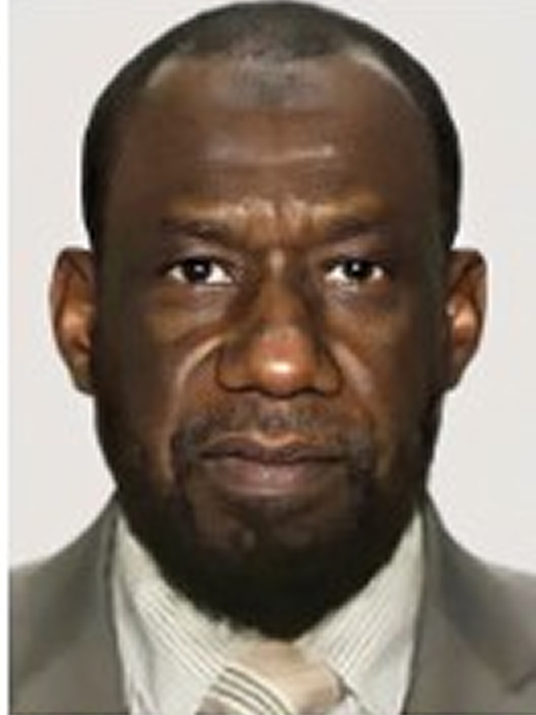
Mallam Garba Sani is a distinguished and highly respected figure, dedicating his profound expertise and leadership experience in the service of Islam and as a Trustee for the Al-Ihsan Zakat and Sadaqat Foundation. With a robust background as a chartered certified accountant (ACCA United Kingdom, qualified 1966), Garba brings over two decades of invaluable experience garnered from significant roles in the Public, Private, and Third Sectors across the United Kingdom. His career encompasses senior positions as an accountant, finance manager, financial controller, finance director, HR director, central services director and company secretary within various Inner London boroughs, alongside his participation in audit teams within the private sector. Beyond his impressive professional credentials, Garba Sani is a deeply committed community and religious leader. He previously served as the deputy Amir (Vice President) and then Amir of the Council of Nigerian Muslim Organisations (CNMO) UK from 2007, an influential umbrella body representing 43 UK-based Nigerian Muslim organisations. He is also a founding member and the first coordinating secretary of the Nigerian Muslim Forum UK, currently serves as a director at the International Centre for Islamic Culture and Education, Al Noor Masjid in Abuja, Nigeria where he holds the position of Director of External Relations, Fundraising and Investment. His dedication to Islamic education is underscored by his studies in Arabic, Tajweed, and Fiqh at the Tayyabun Institute of Islamic Studies London (2009-2012). In his capacity as a Trustee for the Al-Ihsan Zakat and Sadaqat Foundation, Garba Sani is focused on guiding the organisation’s mission to facilitate charitable giving in alignment with Islamic principles. The foundation is dedicated to uplifting communities through sustainable programs, emergency relief, and individual support, reaching vulnerable individuals and communities including the poor, the hungry, the sick, orphans, and those affected by crises or disasters. His strategic oversight helps ensure that Zakat and Sadaqat contributions are utilised effectively to provide essential aid such as food, water, medical support, and educational opportunities to those most in need, both locally and internationally. His commitment aligns perfectly with Al-Ihsan's vision of fostering a society where core Islamic values of belief, knowledge, spirituality, worship, and charity are established, aiming to educate, empower, and inspire the unprivileged through spiritual guidance, educational enrichment, and dynamic social and charitable services.
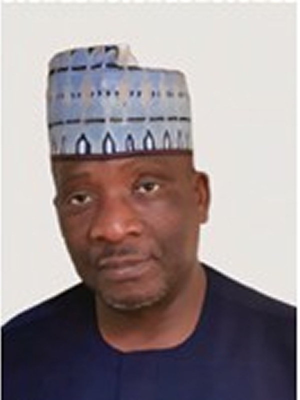
Hadji Munirudeen Ajayi is a distinguished accountant, manager, and community leader whose career spans finance, corporate gover nance, and charitable service. A Fellow of both the Institute of Char tered Accountants (FCA) and the Association of Chartered Certified Accountants (FCCA), Munir holds directorships in several UK-based f irms and serves as trustee to a number of charitable organisations. As the current Amir of the Council of Nigerian Muslim Organi sations (CNMO), UK, Munir is a passionate advocate for inclu sive economic growth and a bridge-builder between the business world and social responsibility. His leadership transcends the boardroom, reflecting a lifelong commitment to community ad vancement, youth mentorship, and sustainable development. In his role as a Trustee of Al-Ihsan Zakat and Sadaqat Foundation, he brings his expertise in financial strategy, regulatory compliance, and business development to support the Foundation’s mission of promoting social welfare through effective zakat and sadaqat man agement. His work consistently aligns professional excellence with meaningful community impact, embodying the principles of ac countability, empowerment, and equity.
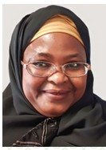
Hadjia Bilikisu A. Savage is a highly experienced and dedicated professional, renowned for her 37 years of service within the UK Civil Service, currently as a People and Engagement Officer at the Home Office. Her core competencies include strategic leadership, policy formulation, performance management, and effective service delivery, complemented by her qualification as an Associate mem ber of the Chartered Institute of Personnel Management (CIPD). A true pillar of her community, Bilikisu is deeply involved in nu merous associations and organizations, reflecting her passion for community cohesion and safeguarding, particularly for women, families, and youth. She actively leads fundraising efforts for the Muslim Association of Nigeria Old Kent Road Mosque, contrib utes to the Old Kent Road Stakeholder Committee, and serves as Assistant Secretary for the Association of British Nigeria Law En forcement Officers (ABLE), a charity promoting positive Nigerian engagement in the UK. She is also a Project Manager for the Ni geria National Community, focusing on community development. Further exemplifying her commitment to justice and public welfare, Bilikisu has served as a Magistrate for over 17 years, where she is also a trained mentor. Her comprehensive experience showcases a lifetime dedicated to making a positive impact.
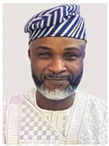
Saheed is a seasoned cybersecurity and governance profession al who serves as Trustee and Secretary of the Stakeholders’ Com mittee at Al-Ihsan Zakat and Sadaqat Foundation. He brings a strategic blend of technical expertise and spiritual integri ty to his role, guiding the Foundation’s mission to serve com munities with accountability, transparency, and compassion. With over a decade of experience in cybersecurity, cloud security ar chitecture, and risk management, Saheed holds the globally respect ed *Certified Information Systems Security Professional (CISSP)* certification, alongside other advanced credentials. He specialises in designing and implementing secure cloud environments that en hance organisational resilience. As an AWS Security Architect, he has a proven track record of evaluating, optimising, and securing cloud infrastructures while ensuring compliance with industry standards. His leadership journey is deeply anchored in service. He previ ously served as Treasurer and General Secretary of the Coun cil of Nigerian Muslim Organisations UK and continues to contribute as an Ex-Officio Member. He also serves as Mis sion Board Secretary at Jama-at-ul Islamiyya of Nigeria in the United Kingdom, demonstrating his enduring commit ment to faith-based governance and community empowerment. By combining structured thinking, technical precision, and spiritual purpose, Saheed exemplifies a leadership style that is both ethically grounded and impact-driven. His contributions continue to uplift professional domains and Islamic institutions throughout the United Kingdom.
© AZSF 2024.